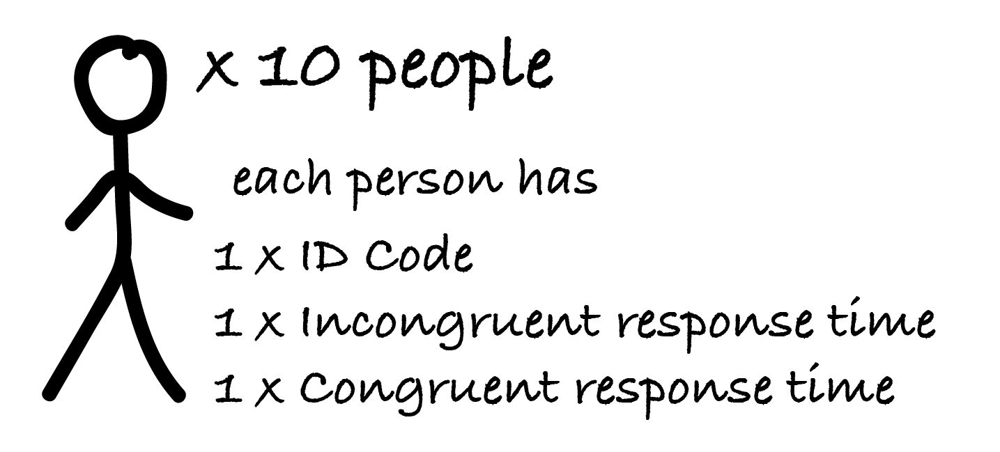

In this tutorial we are going to cover how to organise our data and how to read that data into R. In the first half of the tutorial we’ll cover the basics of how data is organized in tables, how columns should be named, and what rows and columns should represent. In the second half of the tutorial we’ll cover how to read data in to R.
By the end of this tutorial you should be able to:
readr::read_csv() to import data from a fileFor most of this tutorial we’ll be using a dataset that contains data from 10 people that have performed a Stroop task. When preforming the Stroop task participants have their response times measured under two conditions—the congruent condition and the incongruent condition. This means that for each of the 10 people we’ll have two measurements—the response time in the congruent condition and their response time in the incongruent condition. Each person will also have an identification (ID) code.

We have a total of 10 people. Each person has:
An ID code
Response time measurement for the incongruent condition
Response time measurement for the congruent condition
This means we have a total of 30 bits of information that we need to organise in a table!
Let’s take a look at different ways to organise this data.
There are two main approaches for organizing data in tables. These are 1) wide or messy format and 2) the long or tidy format. In this course we’ll always be organizing our data in the tidy format, but in this section we’ll see data in both the tidy and messy format because it will help you to understand and recognise the difference.
As the name suggests, when data is organised in wide format the data tables tend to be very wide! This happens because wide data uses columns to give data table its structure. Let us take a look at some data organised in wide format.
Run the example below to print our Stroop data organised in the wide format.
stroop_wideAs you can see, when our data is organised in wide format we have three columns: One for each bit of information we have about each person. The id column has their ID code. The congru column has their response time for the congruent condition. And the incongru column has their response time for the incongruent condition.
The data table also has ten rows. One row for each person in our dataset.
The key detail here is that when data is organised in wide format, all the data from a participant lives in a single row and columns are used for holding different measurements.
The tidy or long format for organising data is the preferred way to organise data in R. As the name suggests, the tidy or long format results in data tables that are very long! We’ll take a look at the same Stroop data, but now organised in the tidy format.
Run the example below to print out the contents of the stroop_long dataset.
stroop_longIf we look at our new data set we’ll see that we now have twice as many rows. Before we only had 10 rows and now we have 20 rows!
In contrast to the messy format where all the measurements from a participant go into a single row, the tidy format organises data so that each measurement is on it’s own row. This means that rather than one row per participant the tidy data could possibly have many rows per participant.
The way the data is structured is also very different. In the messy format data is organised by participant but in the tidy format data is organised by measurement. And instead of using columns to hold different measurements, the tidy format uses columns to hold information about a measurement. The value column now holds the measurement itself. The condition columns says which condition that measurement comes from. And the id column says which person that measurement comes from.
In the tidy format, the columns are also referred to a variables. So we can say: “The id variable holds the participant identifiers”, or “the condition variable holds the condition identifiers”. You’ll see that using the term “variable” makes sense, because the same rules that apply to naming ordinary variables in R also applies to naming columns and, in later tutorials, we’ll be interacting with columns in much the same way that we interact with ordinary variables.
In the tidy format, the rows are also referred to as observations. Again, this makes sense because observation is just synonym for a measurement.
In the practical classes you’ll get a chance to manually enter some data into a Google sheet. We’ll then import this data into R. But before we can actually start entering in data we need to learn a few rules and conventions about, for example, naming columns and handling missing data. That’s the topic of this section! Some of this might seem a bit abstract, but stick with it because when you get to actually doing it then these rules and conventions will really help.
Just like when naming other kinds of variables there are a few special rules for naming columns. We only really have to worry about the two most important ones:
Column names can not contain spaces
Column names can not start with a number
You have to follow the rules or R won’t work properly!
In addition to the rules, there are also some conventions that you should follow.
Because you can’t use spaces in column names one of the conventions is to use snake_case instead! Snake case just means that you replace spaces with underscores i.e, the _ symbol
You should try and balance informativeness and length for your column names. Make your column names long enough to be informative, but not so long that they’ll take ages to type!
Missing data is handled in R in a special way. R uses NA to represent data that is missing. When you’re entering data, and you plan to read that data into R later, the best way to handle missing data is just to not enter anything! This might seem like a silly thing to mention, but in the past (and something still today) people used to enter 99 for a measurement whenever the value was missing. Don’t be tempted to do this!
Whether we’ve created a data table ourselves (like we’ll do in the practicals!) or whether we’ve got a data file from somewhere else, the file isn’t much use to us unless we can get the data from the file in to R!
There’s lots of different file types / file formats that we can use to save data in, but best practice is to use comma-separated values (.csv) files (we’ve mentioned this file extension before in previous practicals and tutorials). Therefore, in this course we’ll learning how to create .csv files and how to read data from .csv files in to R.
.csv files get their name from the fact that the values in the file are separated by commas. If you had to take a look inside a .csv file then it would look something like the following:
id,condition,value
s01,congru,2801
s01,incong,3509
s02,congru,2038But how to we get the data from the .csv file into a dataset that we can manipulate in R?
To read or import data we’ll use the readr package. The readr package has lots of functions for dealing with different kinds of data, but we’ll be using the function called readr::read_csv().
readr::read_csv() functionWhen you’re first getting started with the readr::read_csv() there will only be open argument that you need to use. This is the file argument. The file argument is just the location of a file. Usually, this is a file path, but you can also give it the location of a file on the internet. In the practicals we’ll always be using file paths, but in this tutorial we’ll use an internet location.
When you’re first getting started with the readr::read_csv() there will only be open argument that you need to use. This is the file argument. The file argument is just the location of a file. Usually, this is a file path, but you can also give it the location of a file on the internet. In the practicals we’ll always be using file paths, but in this tutorial we’ll use an internet location.
When you load a file with the readr::read_csv() function the output is a data table. But usually what we’ll want to do is assign that output to a variable. Run the code below to see what it looks like when you read data from a .csv. After running the code, modify it so that you assign the output to a variable called ma_snarc.
readr::read_csv(file = "https://files.mindsci.app/ma_snarc_trial.csv")ma_snarc <- readr::read_csv(file = "https://paas-embed.netlify.app/ma_snarc_trial.csv")